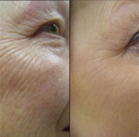
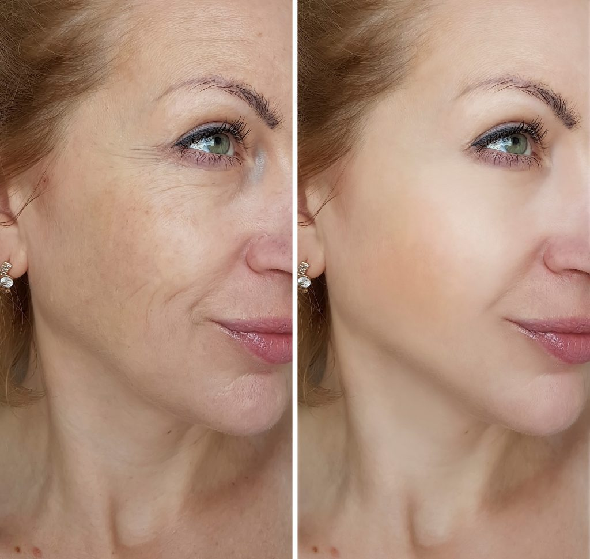

Az emocionális lányoknak a mimikai ráncok komoly problémát jelentenek, ugyanis ezek már 30 éves kor körül vagy akár annál korábban is megjelenhetnek. A ráncok az idő múlásával egyre mélyebbekké válnak, úgyhogy speciális segítség nélkül ezek nem távolíthatók el. A Cosmopolitan interjút készített Virág Ágnes kozmetológussal, és összeállított egy top 5-ös listát, hogyan fiatalíthatja meg bőrét. Olvassa el és jegyezze fel!

1. Igyon több vizet!
A szervezetnek vízre van szüksége. A vízhiányos miatt a bőr könnyen kiszárad, és a korai öregedés jelei korábban megjelennek a vízhiányos bőrön. Próbáljon meg naponta legalább 1 liter vizet meginni. Így a bőrsejtek szükséges mennyiségű folyadékhoz jutnak, és még hosszú évekig rugalmasak maradnak. Azonban figyeljen a következőre: a forralt víz és a csapvíz nincs jó hatással a testre, igyon inkább tiszta forrásvizet.
2. Egyen egészségen ételeket
Egyes termékek szó szerint megakadályozzák a ráncok kialakulását. Idetartoznak a gyümölcsök és a zöldségek (kivéve a keményítőtartalmú zöldségeket), alacsonyabb zsírtartalmú húsok és halak, túró és egyéb természetes tejtermékek. De sok olaj és zsír nélkül kell őket elkészíteni.
3. Figyeljen az archigiéniára
Naponta legalább kétszer mossa meg az arcát: reggel és este. Használjon bőrtípusának megfelelő arctisztító szereket. Ha sminket is viselt a nap folyamán, akkor hazaérve azonnal mossa le. Ez a rendszeres bőrtisztítás eltávolítja a régi elszarusodott bőrsejteket, és lassítja a bőr öregedését.
4. Használjon különleges ránckisimító szereket
Ha már megjelentek az arcán a ráncok, akkor azokat különleges szerekkel simíthatja ki. Sajnos, a szépséget és az egészséget fenntartó szerek mintegy 85%-a láthatóan nem fiatalítja meg az arcát. Egy nagyon jó készítményt szeretnék ajánlani az olvasóknak, amelyet ráadásul az ügyfeleimmel való munkám során is használok. Tökéletesen kisimítja a bőrt, és szinte minden kozmetológus használja.
5. Ne ráncolja a homlokát.
Talán már sokszor hallotta, de tényleg érdemes felhagyni a homlokráncolással. Sőt, minél több jó dolgot vesz észre az életében, annál jobb. Ha rápillantanak az öregasszonyokra, az arcukra szó szerint minden rá van írva. A ráncok azoknál a nőknél jelennek meg a leghamarabb, akik állandóan elégedetlenek, és pofákat vágnak, grimaszolnak, és folyton dühösek az egész világra. Mindez nyomot hagy az arcon. Azok pedig, akik minden rossz ellenére figyelnek magukra, és a jót látják mindenben, 60 vagy 70 évesen is jól néznek ki arcplasztika nélkül.
Reméljük, hogy hasznosak lesznek a tanácsaink. Ágnes javaslatát követve csatoltuk a linket, amelyen még többet tudhatnak meg az említett ránctalanító készítményről. Részletes információhoz és megrendelés leadásához kattintson ide. Ha további kérdése lenne, ossza meg velünk hozzászólásban.
Sok szerencsét, lányok!
Hozzászólások:
Faragó Irma
Köszönöm a tanácsokat. Először szeretnék összeállítani egy egészséges napi menüt, mert az öregedés első jelei már megjelentek az arcomon :) aztán szeretném kipróbálni ezt a készítményt is
Bálint Zsófia
Én is megrendeltem, nem is volt drága. A szépségszalonban több mint 400 euróba kerül az arcfiatalítás!!
Vörös Annamária
Haha. A fürdőszobai szekrényemben is van egy ilyen készítmény, már régóta használom. 44 éves vagyok, nézzétek meg a képet! Már hat hónapja használom az -et, sokan azt mondják, hogy 10 évvel fiatalabbnak nézek ki.
Liza
Sokat olvastam erről az készítményről. Hosszú ideig vaciláltam, aztán csak megrendeltem. És nem bántam meg! Nézzétek csak meg, a két kép között kevesebb mint egy hét telt el:
Károly
Teljesen véletlenül bukkantam erre az oldalra, és végre megvan, hogy mit veszek ajándékba az anyukámnak. Ami a vizet illeti, azt szeretném kiemelni, hogy naponta kb. 2 litert meg kell inni, 1 liter nem elég.
Orsolya
Én csak 37 vagyok, de már most úgy nézek ki, mint egy aszalt sárgabarack! Az az utolsó reményem. Biztos, hogy segíteni fog?
Fekete Dorottya
Segíteni fog, ne kételkedj! Én még csak két hete használom, de már most 10 évet fiatalodtam. Nézze csak meg a képet, és Önnél még jobb lesz az eredmény, hiszen jóval fiatalabb nálam!
Kata
Őszintén szólva megleptél! 40 évesen váltam el, de most már teljes életet élek, 15-20 évvel fiatalabb férfiakkal találkozom, és ellenállhatatlannak érzem magam! Pedig már közel vagyok a 60-hoz, ne feledjék! Igen, rendszeresen használom az -et és tornázom is. Jobban nézek ki és vidámabban élek, mint sok más fiatal lány! Szóval ahogy itt is tanácsolják az utolsó pontban, pozitívan élek. Nézzétek meg az eredményemet, amelyet két hónap alatt értem el

Boros Judit
Megerősítem a fent leírtakat. Én magam is egy kozmetológiai klinikán dolgozom, és mi is az -et használjuk. Az ügyfelek nagyon elégedettek, újra és újra visszatérnek, sőt, az -et alkalmazó procedúrák ára többnyire kedvező. Még nem láttam ezt a készítmény a gyógyszertárakban vagy az üzletekben, a klinika, ahol dolgozom, a hivatalos honlapon rendeli.
Kelemen Erika
A lányom a szülinapomra vette nekem az -et. Nagyon jó ez a készítmény, könnyen használható. Már az első használat után látható az eredmény! A bőröm rugalmas, nincsenek foltok, eltűntek a táskák a szemem alól. Egy hónap után értem el ezt az eredményt, nézzétek csak meg:
Antal Erzsébet
Köszönöm a tanácsot. Kipróbálom :)
Boda Ilona
Érdekes. Számos készítményt kipróbáltam, és már belenyugodtam, hogy egyik sem hat. Kipróbálom az -et is. Hátha majd ez segít. Úgy se kerül sokba
Szabó Ágota
25 évesen is lehet használni az -et? Mert nekem már most ráncok vannak a szemeim alatt((( Nagyon aggódom :((((((
Krisztina
Igen, lehet és kell is. Kisimítja a meglévő ráncokat, és még hosszú ideig nem jelennek meg az újak, a bőr pedig friss és üde marad.
Szabó Ágota
Köszönöm! Megrendeltem ezen a honlapon. Most pedig alig várom, hogy kihozzák!
Hegedüs Veronika
Én csak jógázom. Azonban a szemöldököm között már most megjelentek a ráncok, folyton azon gondolkozom, hogyan tüntethetném el őket.
Tímea
A húgom Amerikában él, ő olvasott valahol erről a szerről, és most folyton arra kér, hogy küldjek neki, mert neki Európából nagyon drága lenne rendelni. Két üveggel küldtem neki a múltkor: az egyiket neki, a másikat a barátnőjének. Most pedig már hetet rendelt, az összes barátnője kért egyet, még a végén üzletet csinál belőle.
Tóth Mária
Nagyon sok készítményt kipróbáltam, de az egyik sem hozott látható eredményt. Már majdnem elmentem a klinikára, de mikor megláttam az árakat, lemondtam róla. Kerestem egy alternatív készítményt, és végre rábukkantam az -re. Néhány hét múlva olyan eredményt kaptam, hogy nem hittem a szememnek!